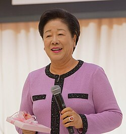

Unification Church leader Hak Ja Han arrested in South Korea over bribery allegations
2025, September 26

Unification Church leader Hak Ja Han arrested in South Korea over bribery allegations
2025, September 26
South Korea
Hak Ja Han, the leader of the Unification Church in South Korea, was arrested early Tuesday. Investigators accused the church of bribing the first lady of impeached President Yoon Suk Yeol, Kim Keon Hee, as well as conservative lawmaker and MP Kweon Seong-dong.Han, 82, had been questioned the previous Wednesday, September 17. Prosecutors allege that she and her organization had delivered a pair of Chanel handbags and a diamond necklace, together valued at 80 million won (USD57,900), to Kim. According to the BBC, prosecutors claimed Han worked with a former church official in 2022 to channel a 100 million won payment to conservative lawmaker Kweon Seong-dong. The arrangement was allegedly intended to secure benefits for the church if her husband later won the 2022 presidential election, which he did. She denied the allegations and maintained that the church official acted on his own.
The leader of the organization appeared before the Seoul Central District Court on Monday for an hours-long hearing, where she declined to answer questions by reporters about the allegations. The court issued an arrest warrant for Han the following day on four charges which include embezzlement and graft, siding with prosecutors who argued she represented a flight risk and could destroy evidence. UPI noted that the court did not order the arrest of her aide Jung Wonju on the same charges because of insufficient evidence. On Wednesday, she was interrogated by a team lead by special counsel Min Joong-ki for four hours, The Korea Times reported.
Following Han's arrest, the church released a statement saying it respected the court's decision, and that it would "cooperate with the ongoing investigation and trial procedures to establish the truth", as well as "restore trust in our church". The organization had previously objected to attempts by investigators to arrest Han, pointing out to her health issues, according to the Associated Press.
Kim Keon Hee had been arrested in August on charges including alleged stock market manipulation and bribery. According to the Associated Press, Kim's case is one of three special prosecutor probes launched by the government of President Lee Jae Myung that target the presidency of Yoon Suk Yeol. According to Reuters, the other investigations involve an unsuccessful attempt by Yoon to declare nationwide martial law in December 2024, which led to his ousting and subsequent imprisonment in April, as well as his government's alleged interference in the case of Marine Corporal Chae Su-geun, who drowned during a flood operation in July 2023.
According to The Guardian, Kweon Seong-dong, a member of the People Power Party described as a pro-Yoon loyalist, was arrested last week. The Guardian also reported investigators visited the headquarters of his party in the same week to seek evidence for claims that the church urged its followers to support him in the party's leadership election in 2023. Both Kim and Kweon denied the allegations.
Hak Ja Han became leader of the organization following the death of her husband Sun Myung Moon in 2012. The Unification Church, officially named The Family Federation for World Peace and Unification, was founded in 1954 by Sun, and is known for recruiting thousands of couples for large weddings. Its affiliated companies operate on the areas of media, construction, health care, and business.